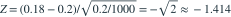

1000 份独立同分布保单的索赔次数服从  ，总索赔次数为 180。检验
，总索赔次数为 180。检验  对
对  ，用原假设方差构造正态近似统计量。取双侧 10% 临界值 1.645，结论是哪项？
，用原假设方差构造正态近似统计量。取双侧 10% 临界值 1.645，结论是哪项？
，总索赔次数为 180。检验 对 ，用原假设方差构造正态近似统计量。取双侧 10% 临界值 1.645，结论是哪项？- A，不拒绝原假设
- B，拒绝原假设
- C，拒绝原假设
- D，不拒绝原假设
我已思考，展开答案与解析
正确答案：A
- 样本均值是 0.18，原假设下均值的标准误为 。
- 因此

。 - 因为 ，在 10% 水平下不拒绝原假设；这并不证明参数一定等于 0.2。
易错提醒题目明确采用原假设下方差，不能混入样本方差口径。
南审 813 · 2025 · 三·2(2)，PDF第2页
从大题拆分考点并重新编写选项；数值或设问有调整。
查看参考来源